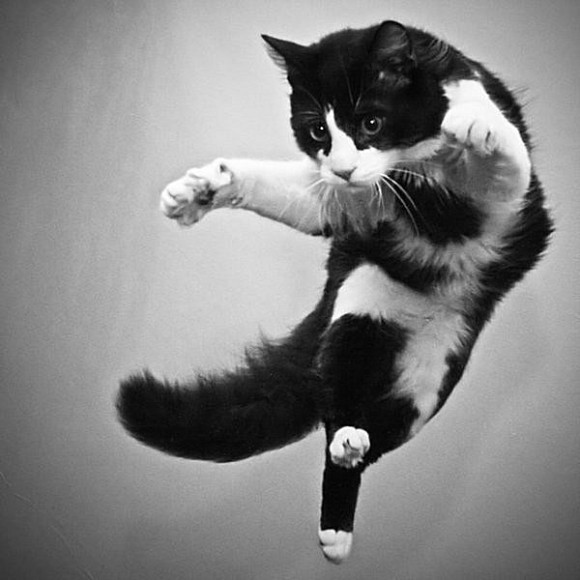

-
第一式（起手式）见龙在田：
出自坤卦，辞曰：“见龙在田，大贞”就是说看见龙在田中会有好事发生。这一招掌力霸道异常，为降龙十八掌最强的一招，取名见龙在田，既是说一掌打去，敌人完蛋大吉。
-
第二式 飞龙在天：
降龙十八掌中的一招，同样源于周易。辞曰：“飞龙在天，利见大人”，飞龙即翱翔在天空的龙，飞龙在天，看尽世事，所以能发现大人（有道德的人）。这一招由上势下，借惯性伤人，正如飞龙借有德者而扬名，威力奇大。
-
第三式 鸿渐于陆：
出于渐卦，渐指妇女，辞曰：“鸿渐于陆，其羽可用为仪”大雁降到平地上，他的羽毛可以被妇女用来装饰。此招之用，在一个巧字，藏巧于拙，用羽为仪。
-
第四式 龙跃在渊：
降龙十八掌中的一招，同样源于周易“龙跃于渊”
-
第五式 羝羊触蕃：
出自大壮卦，辞曰：“羝羊触藩，赢其角”两只羊角力，赢的用的是它的角。这招用途是说要用有力点来伤敌。但“羝羊触藩，不能退，不能邃。”运用不当相信会反受其害。
-
第六式 潜龙勿用：
源于坤卦，辞曰：“潜龙勿用”，龙潜于渊，其志难测，所以不可用。此招劲收于内凝而不发，但若有敢试其锋芒者，必受其殃。
-
第七式 利涉大川：
源于同仁卦，同人既是同志，辞曰：“同人于野，亨，利涉大川，利君子贞”有好朋友聚集起来，畅通无阻，所以去危险的地方也变得安全了。此招表面平平无期，实质上力聚于掌，正如好友的聚集，难凝而易散。如中此招，必定全身筋脉尽碎，死的苦不堪言！
-
第八式 神龙摆尾：
本名履虎尾，出入履卦，履既踏，辞曰：“眇能视，跛能履，履护尾，咀人”意思是说人瞎了一只眼睛还能看见东西，瘸了一条腿还能走路，但是如果不小踏上了老虎的尾巴，就会被它吃掉。这招专攻背后之人，劲道奇猛，实为降龙十八掌的救命绝招。
-
第九式 密云不雨：
出自乾卦，辞曰：“密云不雨，时或有风”雨云很多了但不下雨，那是由于在等待着刮风。此招不在于密云不雨，密云不雨只是力量的积累，而真正的杀手却在时或有风上，风声（时机）一起，敌人便万劫难逃了。
-
第十式 突如其来：
功如其名,去势奇快,攻其不备,最易出奇制胜.在对手未反应之前,便给予敌人致命一击.
-
第十一式 双龙取水：
攻势一分为二,看似平常一招,功力与身法倍增二倍有余,有点类似于周伯通自创的双手互搏,但与其比较有过之无不及
-
第十二式 鱼跃于渊：
平凡的一跃,尤如龙腾九霄,有着强大的爆发力.
-
第十三式 震惊百里：
出于震卦，震就是雷，辞曰：“震惊百里，不丧匕鬯（鬯：一种酒）”本来是说一个人虽然被吓了一跳但连酒也没撒掉，但光从名字来理解的话就是说雷电莫大的威力了。这一招生势浩大,震惊百里
-
第十四式 损则有孚：
出自损卦，损就是不利的方面，和益卦相反。辞曰：“损，有孚”孚就是信用，辞曰：“自上至下谓之损”本句是说虽然守了信用但却没办成好事。此招出招和飞龙在天相似，自上而下，然损却接益，辞曰：“自下至上谓之益”，变招犹如异军突起，让人防不胜防。
-
第十五式 时乘六龙：
出自乾卦，辞曰：“时乘六龙以御天”自古传说五岳为中华灵气之所在，每岳各有神龙镇守，加以姬黄帝（就是轩辕黄帝）之应龙，是为六龙。六龙齐出，王道浩然，其势之大，盖地铺天，为降龙十八掌最有王道正气的一招。
-
第十六式 龙战于野：
取意于周易中的坤卦，坤者为地，辞曰：“龙战于野，其血玄黄”，野在这里作为平地讲，玄指黑色，其血玄黄是说血改变了应有的颜色。按古代的思想，龙上在于天，中潜于渊，下见于田。“龙战于野，其道穷也”指的就是龙处在了不该处于的位置，他的力量同时也被激发了出来，出这招一般在于危难之时的奋力一博，正因为没有退路，所以此招才无所不辟！
-
第十七式 履霜冰至：
出自坤卦，辞曰：“履霜，坚冰至”踩到了霜，就应该想到大冰雪要来了。这招招如其名，初时似柔弱无力，但如敌人胆敢进招，就如暴雪突降，后劲无穷。
-
第十八式 亢龙有悔：
降龙十八掌中最常使用的一招，取意于周易中的乾卦，乾代表天，辞曰：“亢龙，有悔”是说亢龙（飞向尽头的龙）虽然当世无敌，但力终有尽时，力尽则悔，悔不可及。亢龙有悔，盈不可久，此招重悔不重亢，后尽无穷。